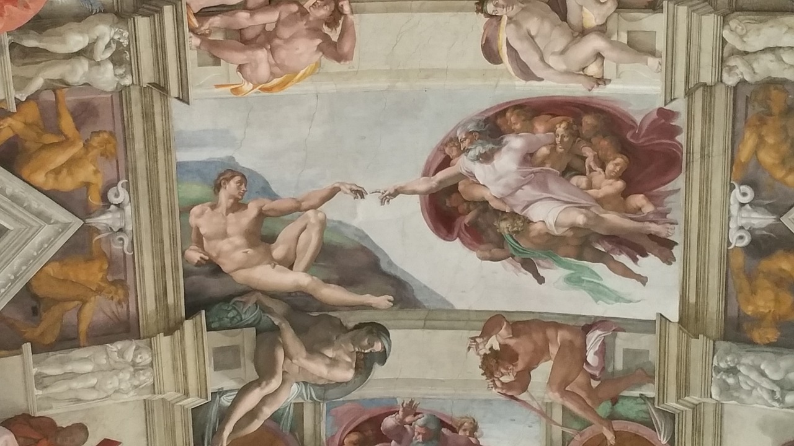
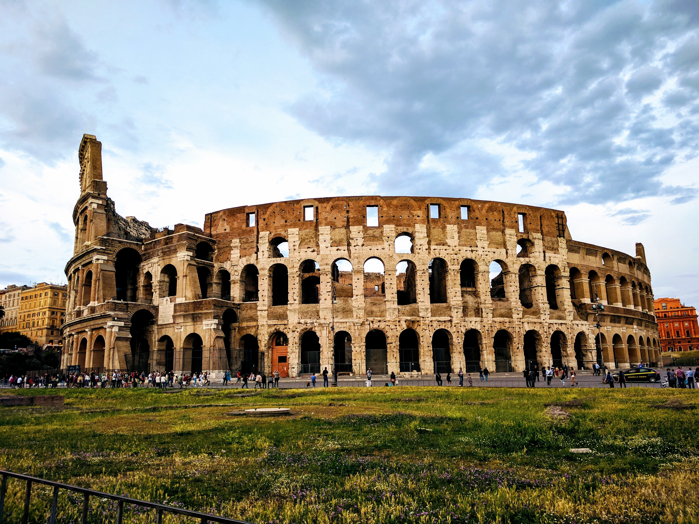
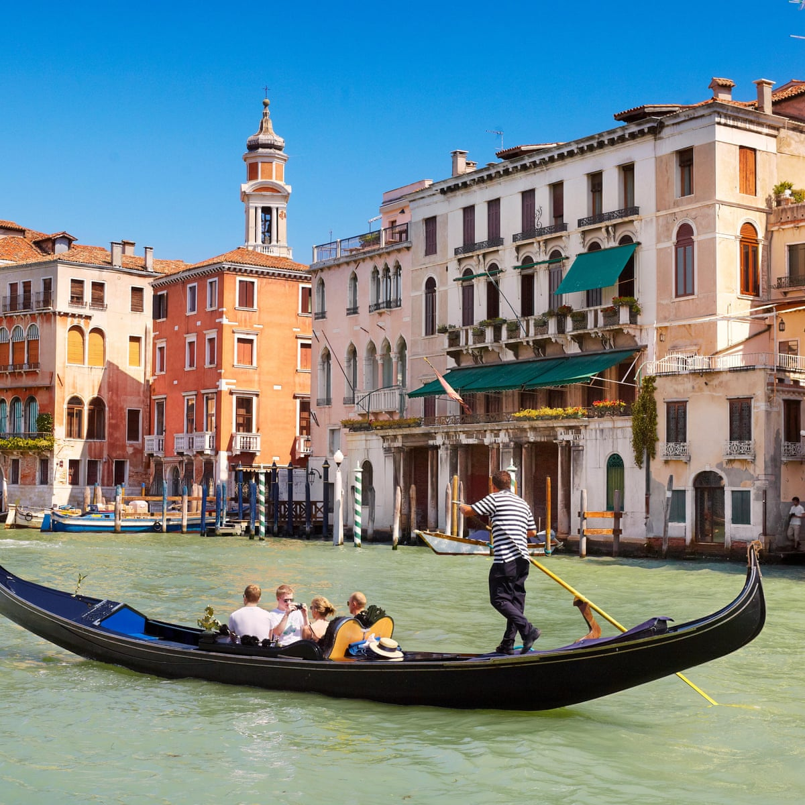
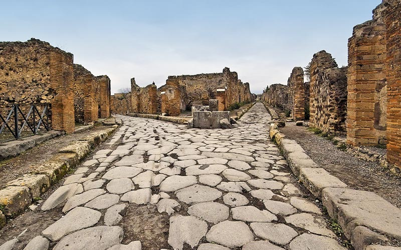

Plans:
Day 1
The first stop will be Rome Italy. Once we have arived there we will take a walk around the Vatican city and then take a lunch break at al42 by pasta chef Monti for one of ther traditanal homestyle pasta dishes. After lunch we will head to the Sistine Chapel located in the Vatican City. Here we will be able to see some of Michelangelo best work. The main sight of the musuem being all of the celing art painted by Michelangelo. After viewing the Sistine Chapel we will head to Piacere Molise for our dinner and that would be the end of day 1.
Day 2
Today will be about visiting things in honor of Shakesphere. Much of Shakesphere inspiration came from Rome Italy espcially in his play Julius Caesar. The play is around 2 hours and 30 minutes. After the play we will look at the wonderful architecture of Rome. We will visit the Colossuem, the Pantheon, the Trajan's Column, and the Roman Forum. Along the way of visiting these places we will stop for some gelato at the Merchant Logo Come il Latte. This will be our last day in rome as we head up to Veince.
Day 3
 Day 3 is going to be a lot of walking. Before the walking we will get some breakfeast at the La Lista Bistro. After that We will take a hike around the Cinque Terre trail and beach.We will be hiking from Vernazza to Monterosso. This will take us around an hour and half to hike with no stops but ofcourse we are going to take some stops along the way. About half way through the hike we will take a stop at the Mediterranean Sea and take a swim to cool of. After our swim to dry off we will talk a zipline ride over the city and then continue our hike.
Day 3 is going to be a lot of walking. Before the walking we will get some breakfeast at the La Lista Bistro. After that We will take a hike around the Cinque Terre trail and beach.We will be hiking from Vernazza to Monterosso. This will take us around an hour and half to hike with no stops but ofcourse we are going to take some stops along the way. About half way through the hike we will take a stop at the Mediterranean Sea and take a swim to cool of. After our swim to dry off we will talk a zipline ride over the city and then continue our hike.
Day 4
Since day 3 was a lot of walking today we will have a more relaxing day. Today we will be glideing through Venice in a Gondola. If you got to Veince this is one of the top things to do. On this journey we will be Touring the Grand Canal. This will be a relaxing two hour tour that shows us neighborhoods, icionic hisorial landmarks and the root of Italy. After this we will go to the street show of the skatebording dog. Then end our day at the Puppa Bar Venezia to have a delscious dinner.
Day 5
Today will be our last day of our Italy vacation. The first thing we will be doing is seeing the remians of Pompeii. Walking around the remains will take around 3 hours becasue there is a lot of land to cover. There is cool art and architecture left that we can visit along Pompeii. After that. After our self gudied tour we will take a meal break at the Mercato Pompeiano Restaurant. AFter that we will spend the last bit of the night at the Ischia beach outside of Pompeii.
Contact Me:
Email:italywithbrooke@email.com
Phone:123-456-7890